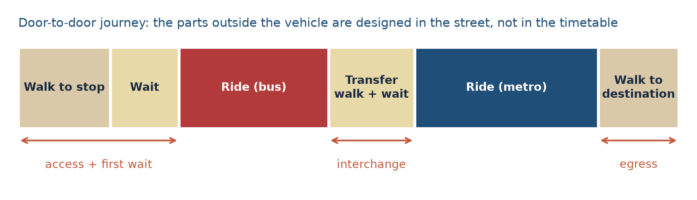
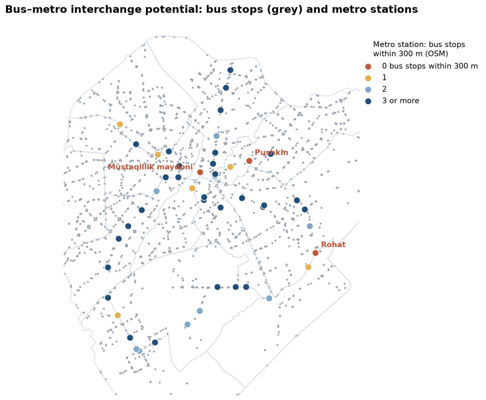
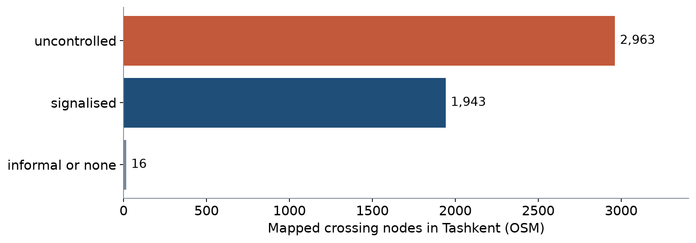

LEC13 · Urban Transport Systems Planning and Design · TSTU · Prof. J. Sodikov
1 / 25
What you will be able to do after today
Break a public-transport trip into access, wait, ride, transfer and egress
Judge an interchange by walking and cycling access, crossings, transfers and information
Weigh park-and-ride against cheaper first/last-mile options
Measure walk access to Tashkent's metro stations from open data
2 / 25
This lecture follows a public-transport trip from door to door: access, waiting, riding, transfer and egress, the final walk to the destination. You will learn to judge an interchange by its walking and cycling access, crossings, transfers and information. You will weigh park-and-ride against cheaper ways of reaching a station. Finally, you will measure walking access to Tashkent's metro stations from open data.
Where this sits: service design meets street design
Service design treats stops and transfers as part of the service
Route structure, corridor strategies and customer information shape what passengers experience
This week joins the PT network (Weeks 4 and 6) to the street that carries people to it
Design question: how far, how safe and how legible is the walk or ride to the vehicle?
3 / 25
Service design treats stops and transfers as part of the public-transport service. Route structure, corridor strategies and customer information also shape what passengers experience. This week connects the network from Weeks 4 and 6 to the streets that carry people to it. The design question is how far, how safe and how easy to follow the walk or ride to the vehicle is.
The door-to-door trip

Schematic. Access, waiting, transfer and egress happen in the street, not in the vehicle.
4 / 25
The figure splits one trip into six parts: the walk to the stop, the wait, a bus ride, a transfer, a metro ride and the walk to the destination. Only the two rides take place inside a vehicle. Access, waiting, the transfer and egress all happen in the street. So street design shapes a large part of every public-transport trip, not only the timetable.
Why out-of-vehicle time weighs more
Passengers value walking, waiting and transfer time more heavily than riding time
Uncertainty makes waiting worse: an unknown wait feels longer than a known one
Each transfer carries a penalty beyond its minutes: effort, risk of a missed connection
So small savings at the stop can matter as much as large savings in the vehicle
5 / 25
Passengers feel time spent walking, waiting and transferring as heavier than the same time spent riding. Uncertainty makes waiting worse, because a wait of unknown length feels longer than a known one. Each transfer also carries a penalty beyond its minutes: the effort, and the risk of missing the connection. This is why a small saving at the stop can matter as much as a large saving in the vehicle.
Worked example: generalised journey time
Weights (illustrative): walking and waiting × 2, riding × 1
Walk 8 + wait 6 + ride 20 + walk 6 = 40 min on the clock
Generalised time = 2×8 + 2×6 + 20 + 2×6 = 60 min
A crossing that saves 3 min of walking saves 6 generalised minutes
Real-time information that cuts perceived waiting has a similar effect
6 / 25
Generalised journey time adds up the parts of a trip after weighting each part by how heavy it feels. In this illustrative example, walking and waiting count twice and riding counts once. The trip takes 40 minutes on the clock, but its generalised time is 2×8 + 2×6 + 20 + 2×6 = 60 minutes. So a crossing that saves 3 minutes of walking saves 6 generalised minutes. Local weights would have to come from a survey of Tashkent travellers.
How far will people walk to a stop?
Catchments are usually set by walking distance on the network, not by straight-line circles
Uzbek planning norm quoted by Pulatova: stop within 500 m (600 m) of homes
Rail attracts longer walks than buses; feeder buses and bicycles extend the catchment
Barriers (canals, rail, wide arterials) shrink a catchment more than distance does
7 / 25
A stop's catchment is the area from which people walk to it. Planners usually measure it by walking distance along the network, not by a straight-line circle. The Uzbek planning norm quoted by Pulatova puts a stop within 500 m of homes, or 600 m in low-density housing areas of large cities. People walk further to rail than to buses, and feeder buses and bicycles extend the catchment. Barriers such as canals, railways and wide arterials shrink a catchment more than distance does.
What makes a good interchange
Element
Design aim
Typical failure
Walking access
Direct, shaded, step-free routes from all sides
Long detours to the only entrance
Crossings
Signalised or raised crossings on desire lines
Uncontrolled crossings of multi-lane roads
Transfer
Short, level, visible walk between modes
Bus stop placed out of sight of the station
Information
Maps, line numbers, real-time departures
No information at bus stops
Cycling
Safe approach and secure cycle parking
Bicycles chained to railings
8 / 25
The table judges an interchange on five elements: walking access, crossings, the transfer, information and cycling. For each element it gives a design aim and a typical failure. For example, crossings should be signalised or raised on desire lines, the routes people want to walk, while a common failure is an uncontrolled crossing of a multi-lane road. You will apply these rows to your own corridor in P7.
Passenger information
Pre-trip: journey planners and open timetable data
At the stop: network map, line numbers, timetable or headway, real-time arrivals
On board: next-stop announcements, transfer information
Information reduces perceived waiting and makes transfers feel safer
Open data (GTFS) lets third parties build the tools — Tashkent has no open GTFS feed yet
9 / 25
Passengers need information before the trip, at the stop and on board. Before the trip they use journey planners and open timetable data. At the stop they need a network map, line numbers, the timetable or headway and real-time arrivals, and on board they need next-stop and transfer announcements. Good information reduces perceived waiting and makes transfers feel safer. GTFS is an open format for timetables that lets other developers build these tools, but no open GTFS feed for Tashkent was found.
Park-and-ride: location, benefits, limits
Location: at the outer end of a fast line, before congestion begins
Benefit: intercepts car trips from areas that buses cannot serve well
Cost: large land take next to stations — land that could carry homes and jobs
Risk: draws people who would otherwise walk, cycle or take a feeder bus
Check against alternatives: feeder buses, bike-and-ride, drop-off bays
10 / 25
In park-and-ride, drivers leave their car at a station and continue by public transport. It works best at the outer end of a fast line, before congestion begins, where it catches car trips from areas that buses cannot serve well. But it takes a large area of land next to stations, land that could carry homes and jobs. It can also attract people who would otherwise walk, cycle or take a feeder bus. So compare it with feeder buses, bike-and-ride and drop-off bays.
Worked example: what park-and-ride costs in land
Assume 500 spaces at about 25–30 m² per space including aisles
Land take ≈ 1.25–1.5 ha, all within walking distance of a station
The same land could host housing for several hundred households
Compare: 500 cycle-parking places fit in roughly a tenth of that area
Ask who uses each option and what it costs per daily rider
11 / 25
This worked example measures park-and-ride in land. With 500 spaces at about 25–30 m² each, aisles included, the car park needs about 1.25–1.5 ha, all within walking distance of a station. The same land could house several hundred households. By comparison, 500 cycle-parking places fit in roughly a tenth of that area. So ask who uses each option and what it costs per daily rider.
Bike-and-ride and shared micromobility
Bicycles widen a station catchment several times at low cost
Needs: a safe approach route, secure parking, a short walk to the platform
Tashkent's Qwatt e-bike share (since 2024): more than 1,300 bikes, placed around metro stations and universities
Sharing works only if the network around the station is safe to ride
12 / 25
Bicycles can widen a station's catchment several times over at low cost. Bike-and-ride needs a safe approach route, secure parking and a short walk to the platform. Tashkent's Qwatt e-bike share started in 2024 and has more than 1,300 bikes, placed around metro stations and universities. Shared bikes help only if the streets around the station are safe to ride.
The second part of the lecture turns to evidence from Tashkent. It uses three sources: Ergashova's (2026) analysis of mahallas, the city's neighbourhood communities, an OpenStreetMap extract from October 2026, and Pulatova's (2024) survey. Ergashova and Pulatova did this work as PhD research at TSTU.
Walking access to the metro, by mahalla
Ergashova (2026): metro stations reachable within a 15-minute walk from each mahalla centre.
14 / 25
The map, from Ergashova (2026), shows how many metro stations can be reached within a 15-minute walk from the centre of each mahalla. Its labels are in Uzbek: "0 ta bekat" means no station. The well-served mahallas lie in the centre, while much of the outer city has no station within walking distance. The lecture then puts this pattern into numbers.
Most mahallas have no metro station within walking distance
Of 585 mahallas, 74.4% have no metro station within a 15-minute walk
102 (17.4%) reach one station; only 18 (3.1%) reach three or more
For most residents the metro is a bus or taxi ride away — the feeder is the interchange
So bus–metro transfers, not walking alone, decide the metro's catchment
15 / 25
Ergashova analysed 585 mahallas, and 74.4% of them have no metro station within a 15-minute walk. A further 102 (17.4%) reach one station, and 18 (3.1%) reach three or more. For most residents, the metro is a bus or taxi ride away, so the feeder bus is the real interchange. This means that transfers between bus and metro, not walking alone, decide how many people the metro can serve.
Bus–metro interchange potential

OSM, October 2026: bus stops within 300 m of each metro station node (straight line). LAB7 repeats this.
16 / 25
The map shows OpenStreetMap bus stops as grey dots and colours each metro station by the number of bus stops within 300 m in a straight line. Stations with no bus stop that close are named on the map. A station's point on the map is not its entrance, and some stops lie beyond large squares. So the straight-line count is a first estimate, and LAB7 repeats it.
What the open data shows
On average 3.0 bus stops within 300 m of a metro station
3 of 49 stations have none: Rohat, Mustaqillik maydoni, Pushkin
Median walk to the nearest bus stop (straight line): 98 m
135 of 2,019 bus stops within 300 m (6.7%) of a station: feeder transfers rely on few stops
On average a metro station has 3.0 bus stops within 300 m, and 3 of 49 stations have none: Rohat, Mustaqillik maydoni and Pushkin. The median, or middle, straight-line distance to the nearest bus stop is 98 m. Only 135 of 2,019 bus stops lie within 300 m of a station, a share of 6.7%. This is expected, because station surroundings cover little of the city, so it does not prove that buses avoid the metro. Straight lines make access look better than it is, so LAB7 checks distances along the network.
Safe crossings on the way to the station
OSM maps 4,922 crossings: 1,943 signalised, 2,963 uncontrolled
Near stations, 40.2% (169 of 420 crossings within 300 m) are signalised
Pulatova's survey: 66.1% say crossings are missing; 64.2% wait a long time to cross
Long waits push people to cross against the signal

18 / 25
OpenStreetMap records 4,922 crossings in Tashkent: 1,943 signalised, 2,963 uncontrolled, and a few of other types. Near metro stations, 40.2% of crossings are signalised: 169 of 420 crossings within 300 m. In Pulatova's survey, 66.1% say crossings are missing and 64.2% say they wait a long time to cross. Long waits push people to cross against the signal, so crossing design is a safety question. OpenStreetMap misses some crossings and the survey reports no sample size, so read both numbers with care.
Shade at stops is part of access
Heat chapter: 25.1% of the central walking network has no or very little shade
78.5 km of that unshaded length lies within a short walk of a transit stop (of 81.7 km in Phase 1)
Stepping from sunlit paving into the nearest shade: surfaces a median 19.5 °C cooler (field measurement points)
A shelter roof is not enough: tree shade over the waiting area and the approach
19 / 25
The heat chapter found that 25.1% of the central walking network has no or very little shade. Of these 81.7 km, which the chapter places in Phase 1 for new shade, 78.5 km lie within a short walk of a transit stop. At the field measurement points, stepping from sunlit paving into the nearest shade meant surfaces a median 19.5 °C cooler. So a shelter roof is not enough: the waiting area and the path to it also need tree shade. Week 9 returns to heat and shade.
Cycling to the metro
34 of 49 stations within 500 m of a field-audited cycle path
But Tashkent's cycle paths are fragmented — a nearby path rarely means a continuous route
Integrating walking and cycling lanes with public transport is a stated research priority at TSTU
Using Normukhammadov's field-audited cycle paths, LAB7 finds a cycle path within 500 m of 34 of 49 stations. But Tashkent's cycle paths are broken into many pieces, so a nearby path rarely means a continuous route to the station. Research at TSTU names the joining of walking and cycling lanes with public transport as a priority. When you design access to a station, check four things: the approach route, the crossing, the parking and the shade.
Discussion
Pick one metro station you know. What is the single change that would most improve the first and last mile — and who would pay for it?
Two minutes in pairs: name the element (walking, crossing, transfer, information, cycling, shade).
21 / 25
This question asks you to apply the lecture to one metro station you know. Name the single element you would change first: walking, a crossing, the transfer, information, cycling or shade. Then say who would pay for the change, such as the metro operator, the bus company or the district khokimiyat (district administration). Be specific about the location.
Key takeaways
Passengers judge the whole door-to-door trip, and the street holds most of the unpleasant parts
Interchanges are designed through access routes, crossings, transfers and information
Park-and-ride has a land cost; compare it with feeders and bike-and-ride
In Tashkent, the metro's reach depends on feeder buses and safe crossings
22 / 25
Passengers judge the whole trip from door to door, and most of its unpleasant parts happen in the street. Interchanges are designed through their access routes, crossings, transfers and information. Park-and-ride costs land, so compare it with feeder buses and bike-and-ride. In Tashkent, how far the metro reaches depends on feeder buses and safe crossings.
Before LAB7 and P7
Open LAB07_interchanges.gpkg in QGIS (EPSG:32642) and find the metro station nearest your corridor
Measure the widths of your corridor's cross-section (tape on site, or a satellite image)
Read the GDCI Global Street Design Guide chapter on transit streets
23 / 25
Before the lab, open LAB07_interchanges.gpkg in QGIS, set to EPSG:32642, and find the metro station nearest your corridor. Measure the width of each part of your corridor's cross-section, with a tape on site or from a satellite image, because P7 needs real widths. Take measurements only from a safe position. Also read the chapter on transit streets in the GDCI Global Street Design Guide.
References
TU Delft, Department of Transport & Planning. CIEM6250 Transport Systems Design — units B-1 Network Design, B-2 Service Design, B-3 Physical Infrastructure Management, B-4 Traffic Operations Management (Smart Public Transport Lab education page; MSc Civil Engineering TTE track). https://www.tudelft.nl/citg/over-faculteit/afdelingen/transport-planning/research/labs/smart-public-transport-lab/education
Wilson, N., Sánchez-Martínez, G., & Nassir, N. (2017). 1.258J/11.541J Public Transportation Systems, Spring 2017. MIT OpenCourseWare. https://ocw.mit.edu/courses/1-258j-public-transportation-systems-spring-2017/
Ben-Akiva, M. (2008). 1.201J/11.545J Transportation Systems Analysis: Demand and Economics, Fall 2008. MIT OpenCourseWare. https://ocw.mit.edu/courses/1-201j-transportation-systems-analysis-demand-and-economics-fall-2008/
Pulatova, Z. S. (2024). Walkability assessment of Tashkent city districts (PhD dissertation, in Uzbek; supervisor J. I. Sodikov). Tashkent State Transport University.
TU Delft (2013). CIE4801 Transportation and Spatial Modelling. TU Delft OpenCourseWare. https://ocw.tudelft.nl/courses/transportation-and-spatial-modelling/
Global Designing Cities Initiative & NACTO (2016). Global Street Design Guide. Island Press. https://globaldesigningcities.org/publication/global-street-design-guide/
Salvucci, F. (2016). 1.252J/11.540J Urban Transportation Planning, Fall 2016. MIT OpenCourseWare. https://ocw.mit.edu/courses/1-252j-urban-transportation-planning-fall-2016/
Rupprecht Consult (Ed.) (2019). Guidelines for Developing and Implementing a Sustainable Urban Mobility Plan (2nd ed.). European Commission / Eltis. https://www.eltis.org/mobility-plans/sump-guidelines
Normukhammadov, A. (2026). Pedalling Towards Sustainability: Developing an Integrated Bicycle Network for Enhanced Urban Mobility in Tashkent City (PhD thesis draft; supervisor J. I. Sodikov). Tashkent State Transport University.
Sodikov, J. I., et al. (2026). Sustainable urban transport: integrating pedestrian and bicycle lanes with the public transport system. AIP Conference Proceedings (2025 Int. Conf.).
Ergashova, M. Z. (2026). 15-minute walkability of Tashkent mahallas — dissertation defence presentation, 14 Oct 2026 (in Uzbek). Tashkent State Transport University.
Sodikov, J. I., et al. (2026). Urban heat actions of 100 global cities: Tashkent, Uzbekistan (book chapter manuscript).